11. Plant Hydraulics¶
11.1. Rooting Profiles¶
11.2. Plant Hydraulic Stress¶
The Plant Hydraulic Stress (PHS) routine explicitly models water transport through the vegetation according to a simple hydraulic framework following Darcy’s Law for porous media flow equations influenced by Bonan et al. (2014), Chuang et al. (2006), Sperry et al. (1998), Sperry and Love (2015), Williams et al (1996).
PHS solves for the vegetation water potential that matches water supply with transpiration demand. Water supply is modeled according to the circuit analog in Figure 11.1. Transpiration demand is modeled relative to maximum transpiration by a transpiration loss function dependent on leaf water potential.
Figure 11.1 Circuit diagram of plant hydraulics scheme
11.2.1. Plant Water Supply¶
The supply equations are used to solve for vegetation water potential forced by transpiration demand and the set of layer-by-layer soil water potentials. The water supply is discretized into segments: soil-to-root, root-to-stem, and stem-to-leaf. There are typically several (1-49) soil-to-root flows operating in parallel, one per soil layer. There are two stem-to-leaf flows operating in parallel, corresponding to the sunlit and shaded “leaves”.
In general the water fluxes (e.g. soil-to-root, root-to-stem, etc.) are modeled according to Darcy’s Law for porous media flow as:
(1)¶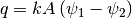
 is the flux of water (mmH2O) spanning the segment
between 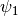 and 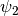
is the flux of water (mmH2O) spanning the segment
between 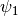 and 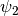
 is the hydraulic conductance (s-1)
is the hydraulic conductance (s-1)
 is the area basis (m2/m2) relating the
conducting area basis to ground area
is the area basis (m2/m2) relating the
conducting area basis to ground area
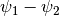 is the gradient in water potential (mmH2O) across the segment
The segments in Figure 11.1 have variable resistance,
as the water potentials become lower, hydraulic conductance decreases. This is
captured by multiplying the maximum segment conductance by a sigmoidal function
capturing the percent loss of conductivity. The function uses two parameters to
fit experimental vulnerability curves: the water potential at 50% loss of
conductivity (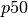) and a shape fitting parameter ( ).
).
(2)¶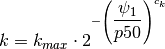
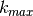 is the maximum segment conductance (s-1)
is the water potential at 50% loss of conductivity (mmH2O)
is the water potential of the lower segment terminus (mmH2O)
11.2.1.1. Stem-to-leaf¶
The area basis and conductance parameterization varies by segment. There are two stem-to-leaf fluxes in parallel, from stem to sunlit leaf and from stem to shaded leaf (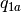 and ). The water flux from stem-to-leaf is the product of the segment conductance, the conducting area basis, and the water potential gradient from stem to leaf. Stem-to-leaf conductance is defined as the maximum conductance multiplied by the percent of maximum conductance, as calculated by the sigmoidal vulnerability curve. The maximum conductance is a PFT parameter representing the maximum conductance of water from stem to leaf per unit leaf area. This parameter can be defined separately for sunlit and shaded segments and should already include the appropriate length scaling (in other words this is a conductance, not conductivity). The water potential gradient is the difference between leaf water potential and stem water potential. There is no gravity term, assuming a negligible difference in height across the segment. The area basis is the leaf area index (either sunlit or shaded).
(3)¶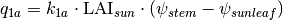
(4)¶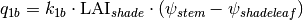
(5)¶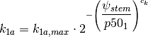
(6)¶
Variables:
= flux of water (mmH2O/s) from stem to sunlit leaf
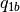 = flux of water (mmH2O/s) from stem to shaded leaf
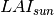 = sunlit leaf area index (m2/m2)
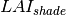 = shaded leaf area index (m2/m2)
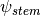 = stem water potential (mmH2O)
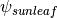 = sunlit leaf water potential (mmH2O)
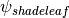 = shaded leaf water potential (mmH2O)
Parameters:
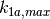 = maximum leaf conductance (s-1)
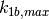 = maximum leaf conductance (s-1)
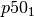 = water potential at 50% loss of conductance (mmH2O)
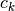 = vulnerability curve shape-fitting parameter (-)
11.2.1.2. Root-to-stem¶
There is one root-to-stem flux. This represents a flux from the root collar to the upper branch reaches. The water flux from root-to-stem is the product of the segment conductance, the conducting area basis, and the water potential gradient from root to stem. Root-to-stem conductance is defined as the maximum conductance multiplied by the percent of maximum conductance, as calculated by the sigmoidal vulnerability curve (two parameters). The maximum conductance is defined as the maximum root-to-stem conductivity per unit stem area (PFT parameter) divided by the length of the conducting path, which is taken to be the vegetation height. The area basis is the stem area index. The gradient in water potential is the difference between the root water potential and the stem water potential less the difference in gravitational potential.
(7)¶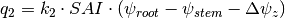
(8)¶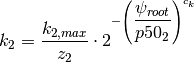
Variables:
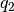 = flux of water (mmH2O/s) from root to stem
= stem area index (m2/m2)
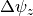 = gravitational potential (mmH2O)
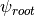 = root water potential (mmH2O)
= stem water potential (mmH2O)
Parameters:
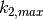 = maximum stem conductivity (m/s)
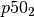 = water potential at 50% loss of conductivity (mmH2O)
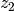 = vegetation height (m)
11.2.1.3. Soil-to-root¶
There are several soil-to-root fluxes operating in parallel (one for each root-containing soil layer). Each represents a flux from the given soil layer to the root collar. The water flux from soil-to-root is the product of the segment conductance, the conducting area basis, and the water potential gradient from soil to root. The area basis is a proxy for root area index, defined as the summed leaf and stem area index multiplied by the root-to-shoot ratio (PFT parameter) multiplied by the layer root fraction. The root fraction comes from an empirical root profile (see section zqz).
The gradient in water potential is the difference between the soil water potential and the root water potential less the difference in gravitational potential. There is only one root water potential to which all soil layers are connected in parallel. A soil-to-root flux can be either positive (vegetation water uptake) or negative (water deposition), depending on the relative values of the root and soil water potentials. This allows for the occurrence of hydraulic redistribution where water moves through vegetation tissue from one soil layer to another.
Soil-to-root conductance is the result of two resistances in series, first across the soil-root interface and then through the root tissue. The root tissue conductance is defined as the maximum conductance multiplied by the percent of maximum conductance, as calculated by the sigmoidal vulnerability curve. The maximum conductance is defined as the maximum root-tissue conductivity (PFT parameter) divided by the length of the conducting path, which is taken to be the soil layer depth plus lateral root length.
The soil-root interface conductance is defined as the soil conductivity divided by the conducting length from soil to root. The soil conductivity varies by soil layer and is calculated based on soil potential and soil properties, via the Brooks-Corey theory. The conducting length is computed by calculating the characteristic root spacing following Bonan-2014. The root spacing depends on total root biomass and PFT parameters defining root structure (see section zqz).
(9)¶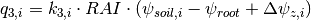
(10)¶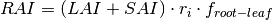
(11)¶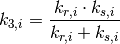
(12)¶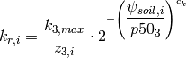
(13)¶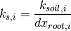
(14)¶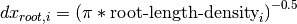
(15)¶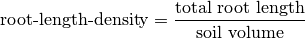
Variables:
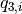 = flux of water (mmH2O/s) from soil layer  to root
to root
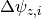 = change in gravitational potential from soil layer to surface (mmH2O)
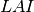 = total leaf area index (m2/m2)
= stem area index (m2/m2)
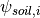 = water potential in soil layer (mmH2O)
= root water potential (mmH2O)
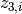 = length of root tissue conducting path = soil layer depth + root lateral length (m)
 = root fraction in soil layer (-)
= root fraction in soil layer (-)
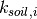 = Brooks-Corey soil conductivity in soil layer (m/s)
Parameters:
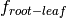 = root-to-shoot ratio (-)
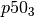 = water potential at 50% loss of root tissue conductance (mmH2O)
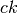 = shape-fitting parameter for vulnerability curve (-)
11.2.2. Plant Water Demand¶
Plant water demand depends on stomatal conductance, which is described in section 9.1. Here we describe the influence of PHS and the coupling of vegetation water demand and supply. PHS models vegetation water demand as transpiration attenuated by a transpiration loss function based on leaf water potential. Sunlit leaf transpiration is modeled as the maximum sunlit leaf transpiration multiplied by the percent of maximum transpiration as modeled by the sigmoidal loss function. The same follows for shaded leaf transpiration. Maximum stomatal conductance is calculated from the Medlyn model (Medlyn et al. 2011) absent water stress and used to calculate the maximum transpiration (see section 5.3). Water stress is calculated as the ratio of attenuated stomatal conductance to maximum stomatal conductance. Water stress is calculated with distinct values for sunlit and shaded leaves. Vegetation water stress is calculated based on leaf water potential and is used to attenuate photosynthesis (see section 9.2)
(16)¶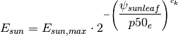
(17)¶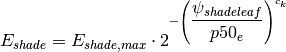
(18)¶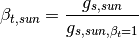
(19)¶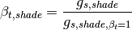
= sunlit leaf transpiration (mm/s)
= shaded leaf transpiration (mm/s)
= sunlit leaf transpiration absent water stress (mm/s)
= shaded leaf transpiration absent water stress (mm/s)
= sunlit leaf water potential (mmH2O)
= shaded leaf water potential (mmH2O)
 = sunlit transpiration water stress (-)
= sunlit transpiration water stress (-)
= shaded transpiration water stress (-)
= stomatal conductance of water corresponding to
= stomatal conductance of water corresponding to
= stomatal conductance of water corresponding to
= stomatal conductance of water corresponding to
11.2.3. Vegetation Water Potential¶
Both plant water supply and demand are functions of vegetation water potential. PHS explicitly models root, stem, shaded leaf, and sunlit leaf water potential at each timestep. PHS iterates to find the vegetation water potential  (vector) that satisfies continuity between the non-linear vegetation water supply and demand (equations (3), (4), (7), (9), (16), (17)).
(vector) that satisfies continuity between the non-linear vegetation water supply and demand (equations (3), (4), (7), (9), (16), (17)).
(20)¶
(21)¶
PHS finds the water potentials that match supply and demand. In the plant water transport equations (21), the demand terms (left-hand side) are decreasing functions of absolute leaf water potential. As absolute leaf water potential becomes larger, water stress increases, causing a decrease in transpiration demand. The supply terms (right-hand side) are increasing functions of absolute leaf water potential. As absolute leaf water potential becomes larger, the gradients in water potential increase, causing an increase in vegetation water supply. PHS takes a Newton’s method approach to iteratively solve for the vegetation water potentials that satisfy continuity (21).
11.2.4. Numerical Implementation¶
The four plant water potential nodes are ( , , , ).
The fluxes between each pair of nodes are labeled in Figure 1.
and are the transpiration from sunlit and shaded leaves, respectively.
We use the circuit-analog model to calculate the vegetation water potential ( ) for the four plant nodes, forced by soil matric potential and unstressed transpiration.
The unstressed transpiration is acquired by running the photosynthesis model with .
The unstressed transpiration flux is attenuated based on the leaf-level vegetation water potential.
Using the attenuated transpiration, we solve for and output .
The continuity of water flow through the system yields four equations
(22)¶
We seek the set of vegetation water potential values,
(23)¶
that satisfies these equations, as forced by the soil moisture and atmospheric state. Each flux on the schematic can be represented in terms of the relevant water potentials. Defining the transpiration fluxes:
(24)¶
Defining the water supply fluxes:
(25)¶![\begin{aligned}
q_{1a}&=k_{1a,max}\cdot 2^{-\left(\dfrac{\psi_{stem}}{p50_1}\right)^{c_k}} \cdot\mbox{LAI}_{sun}\cdot\left(\psi_{stem}-\psi_{sunleaf} \right) \\
q_{1b}&=k_{1b,max}\cdot 2^{-\left(\dfrac{\psi_{stem}}{p50_1}\right)^{c_k}}\cdot\mbox{LAI}_{shade}\cdot\left(\psi_{stem}-\psi_{shadeleaf} \right) \\
q_2&=\dfrac{k_{2,max}}{z_2} \cdot 2^{-\left(\dfrac{\psi_{root}}{p50_2}\right)^{c_k}} \cdot SAI \cdot \left( \psi_{root} - \psi_{stem} - \Delta \psi_z \right) \\
q_{soil}&=\sum_{i=1}^{nlevsoi}{q_{3,i}}=\sum_{i=1}^{nlevsoi}{k_{3,i}\cdot RAI\cdot\left(\psi_{soil,i}-\psi_{root} + \Delta\psi_{z,i} \right)}
\end{aligned}](../../_images/math/6a1915bc680b76d4f69aca0a1ff216dbfbe8f447.png)
We’re looking to find the vector
that fits with soil and atmospheric forcings while satisfying water flow continuity.
Due to the model non-linearity, we use a linearized explicit approach, iterating with Newton’s method.
The initial guess is the solution for (vector) from the previous time step.
The general framework, from iteration m to m+1 is:
(26)¶
So for our first flux balance equation, at iteration m+1, we have:
(27)¶
Which can be linearized to:
(28)¶
And rearranged to be:
(29)¶
And for the other 3 flux balance equations:
(30)¶
Putting all four together in matrix form:
(31)¶![\left[ \begin {array}{c}
\dfrac{\delta q_{1a}}{\delta\psi}-\dfrac{\delta E_{sun}}{\delta\psi} \cr
\dfrac{\delta q_{1b}}{\delta\psi}-\dfrac{\delta E_{sha}}{\delta\psi} \cr
\dfrac{\delta q_2}{\delta\psi}-\dfrac{\delta q_{1a}}{\delta\psi}-\dfrac{\delta q_{1b}}{\delta\psi} \cr
\dfrac{\delta q_{soil}}{\delta\psi}-\dfrac{\delta q_2}{\delta\psi}
\end {array} \right]
\Delta\psi=
\left[ \begin {array}{c}
E_{sun}^{m}-q_{1a}^{m} \cr
E_{sha}^{m}-q_{1b}^{m} \cr
q_{1a}^{m}+q_{1b}^{m}-q_2^{m} \cr
q_2^{m}-q_{soil}^{m}
\end {array} \right]](../../_images/math/aa5adf17b29c7e28bc3844a838ed9af177454d3c.png)
Now to expand the left-hand side, from generic to all four plant water potential nodes, noting that many derivatives are zero (e.g. )
Introducing the notation:
(32)¶
(33)¶![A=
\left[ \begin {array}{cccc}
\dfrac{\delta q_{1a}}{\delta \psi_{sun}}-\dfrac{\delta E_{sun}}{\delta \psi_{sun}}&0&\dfrac{\delta q_{1a}}{\delta \psi_{stem}}&0\cr
0&\dfrac{\delta q_{1b}}{\delta \psi_{sha}}-\dfrac{\delta E_{sha}}{\delta \psi_{sha}}&\dfrac{\delta q_{1b}}{\delta \psi_{stem}}&0\cr
-\dfrac{\delta q_{1a}}{\delta \psi_{sun}}&
-\dfrac{\delta q_{1b}}{\delta \psi_{sha}}&
\dfrac{\delta q_2}{\delta \psi_{stem}}-\dfrac{\delta q_{1a}}{\delta \psi_{stem}}-\dfrac{\delta q_{1b}}{\delta \psi_{stem}}&
\dfrac{\delta q_2}{\delta \psi_{root}}\cr
0&0&-\dfrac{\delta q_2}{\delta \psi_{stem}}&\dfrac{\delta q_{soil}}{\delta \psi_{root}}-\dfrac{\delta q_2}{\delta \psi_{root}}
\end {array} \right]](../../_images/math/17f95ac4a11edff14c67439da52968f03cd63e5d.png)
(34)¶
Now we compute all the entries for and  based on the soil moisture and maximum transpiration forcings and can solve to find:
based on the soil moisture and maximum transpiration forcings and can solve to find:
(35)¶
(36)¶
We iterate until , signifying water flux balance through the system. The result is a final set of water potentials ( , , , ) satisfying non-divergent water flux through the system. The magnitude of the water flux is driven by soil matric potential and unstressed ( ) transpiration.
We use the transpiration solution (corresponding to the final solution for ) to compute stomatal conductance. The stomatal conductance is then used to compute .
(37)¶
(38)¶
The values are used in the Photosynthesis module (see section 9.2) to apply water stress.
The solution for is saved as a new variable (vegetation water potential) and is indicative of plant water status.
The soil-to-root fluxes are used as the soil transpiration sink in the Richards’ equation subsurface flow equations (see section 7.3).
11.2.5. Flow Diagram of Leaf Flux Calculations:¶
PHS runs nested in the loop that solves for sensible and latent heat fluxes and temperature for vegetated surfaces (see section 5.3).
The scheme iterates for convergence of leaf temperature (), transpiration water stress (), and intercellular CO2 concentration ().
PHS is forced by maximum transpiration (absent water stress, ), whereby we first solve for assimilation, stomatal conductance, and intercellular CO2 with and both set to 1.
This involves iterating to convergence of (see section 9.2).
Next, using the solutions for and , PHS solves for , , and .
The values for , and are inputs to the photosynthesis routine, which now solves for attenuated photosynthesis and stomatal conductance (reflecting water stress).
Again this involves iterating to convergence of .
Non-linearities between and transpiration require also iterating to convergence of .
The outermost level of iteration works towards convergence of leaf temperature, reflecting leaf surface energy balance.
Figure 11.2 Flow diagram of leaf flux calculations
11.2.6. References¶
Local references. Will copy over
Bonan, G.B., Williams, M., Fisher, R.A., and Oleson, K.W. 2014. Modeling stomatal conductance in the earth system: linking leaf water-use efficiency and water transport along the soil–plant–atmosphere continuum, Geosci. Model Dev., 7, 2193-2222, doi:10.5194/gmd-7-2193-2014.
Chuang Y.L., Oren R., Bertozzi A.L, Phillips N., Katul G.G. 2006. The porous media model for the hydraulic system of a conifer tree: Linking sap flux data to transpiration rate, Ecological Modelling, 191, 447-468, doi:10.1016/j.ecolmodel.2005.03.027.
Medlyn, B.E., Duursma, R.A., Eamus, D., Ellsworth, D.S., Prentice, I.C., Barton, C.V.M., Crous, K.Y., De Angelis, P., Freeman, M., and Wingate, L. (2011), Reconciling the optimal and empirical approaches to modelling stomatal conductance. Global Change Biology, 17: 2134–2144. doi:10.1111/j.1365-2486.2010.02375.x
Sperry, J.S., Adler, F.R., Campbell, G.S. and Comstock, J.P. (1998), Limitation of plant water use by rhizosphere and xylem conductance: results from a model. Plant, Cell & Environment, 21: 347–359. doi:10.1046/j.1365-3040.1998.00287.x
Sperry, J.S. and Love, D.M. 2015. What plant hydraulics can tell us about responses to climate-change droughts. New Phytol, 207: 14–27. doi:10.1111/nph.13354
Williams, M., Rastetter, E.B., Fernandes, D.N., Goulden, M.L., Wofsy, S.C., Shaver, G.R., Melillo, J.M., Munger, J.W., Fan, S.M. and Nadelhoffer, K.J. 1996. Modelling the soil-plant-atmosphere continuum in a Quercus–Acer stand at Harvard Forest: the regulation of stomatal conductance by light, nitrogen and soil/plant hydraulic properties. Plant, Cell & Environment, 19: 911–927. doi:10.1111/j.1365-3040.1996.tb00456.x